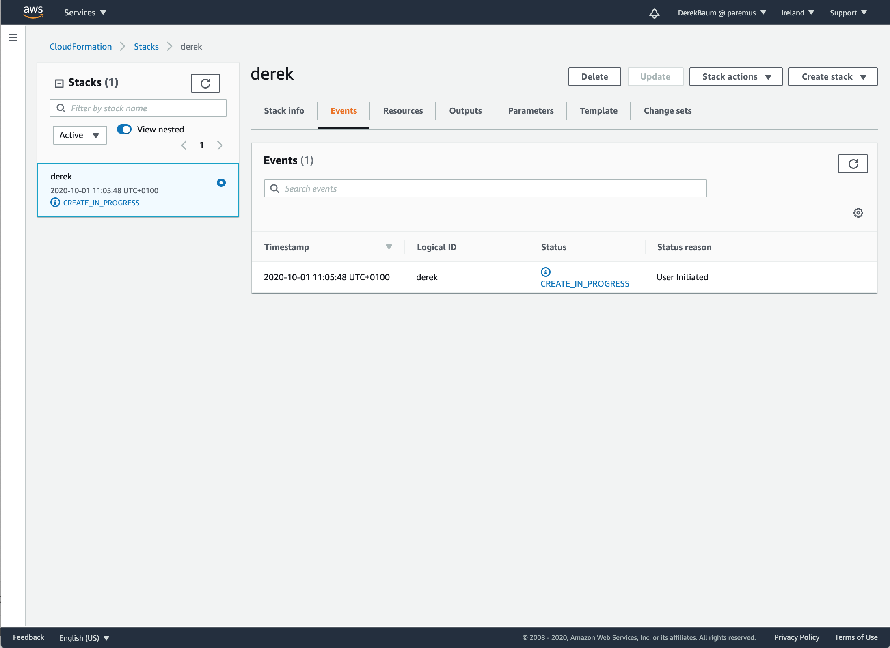

Create Fabric in Cloud
Summary
This tutorial shows how to create a Fabric from scratch using Amazon EC2.
The fabric created can then be used for the Distributed Deployment tutorial.
Prerequsities
You need an Amazon AWS account with permission to run CloudFormation and provision EC2 instances.
You can not use the AWS free tier because you need to create multiple EC2 instances.
CloudFormation
Log in to your AWS account and select the region in which you want to create the fabric.
You will be billed for the AWS resources used if you create a stack from this template.
The approximate cost for a fabric consisting of 1 infrastructure and 3 simple t3a.small instances is $0.10/hour.
Create stack
Navigate to the CloudFormation service and click Create Stack.

Under Specify template enter the following for Amazon S3 URL which is an example template:
https://s3-eu-west-1.amazonaws.com/paremus-packager/fabric2.template
Click Next
Specify stack details

Enter a unique stack name
The stack name is also used as the fabric name, and a component of the DNS name for your fabric, so don’t just use ‘test’ or it will conflict with other fabrics using the same name.
Enter your network configuration details by selecting the Vpcid and Subnets.
Choose the number of simple nodes in the fabric.
The fabric is created with 1 infrastructure node and 1-20 simple nodes.
Select the EC2 instance type.
The default instance type t3a.small has 2Gb memory and is sufficient for a demo fabric.
Finally select a KeyPair to allow ssh access to the instances.
If you don’t have any KeyPairs in this region, you can create one by navigating to EC2/Key pairs
Click Next

Click Next
Review stack
scroll to the end:

Click the checkbox to acknowledge that CloudFormation can create IAM resources.
The fabric template creates an IAM role with permission for ec2.DescribeInstances which is needed so fibres can determine the IP address of the infrastructure node.
Click CreateStack.
Create in progress
Stack creation will take about 5 minutes

You can refresh to see some progress events:
If you’re bored waiting, after about 2m30s you should see the instances in the EC2 console:

Create complete
When the create is complete, click on the Outputs tab and you’ll see the URLs for the fabric:
Click on the DNS link and you should see the secure fabric login page:
This relies on a DNS update to add your fabric IP address as your-fabric-name.servicefabric.paremus.com. If the DNS update has not yet propagated to you, use the Fabric IP address instead.
Not using the DNS address will cause a privacy error in the browser, which you need to accept.
Login to the fabric with Username: AdminUser and password: AdminUser and check Show: Fibre Names and you should see all the fibres in your fabric:
Use Fabric
You can now use this fabric for the Distributed Deployment tutorial.
The infrastructure node contains nginx, which can be used as the webserver for that tutorial
$ ssh centos@derek.servicefabric.paremus.com
[centos@ip-172-31-42-116 ~]$ sudo unzip -d /usr/share/nginx/html /tmp/brain-iot-repos-0.0.1-SNAPSHOT.zip
Delete stack
When you’ve finished using the fabric, you should delete the stack to avoid ongoing AWS costs.
Navigate to CloudFormation, select the stack for your fabric and click Delete:

End
That completes this tutorial.
Prev Next